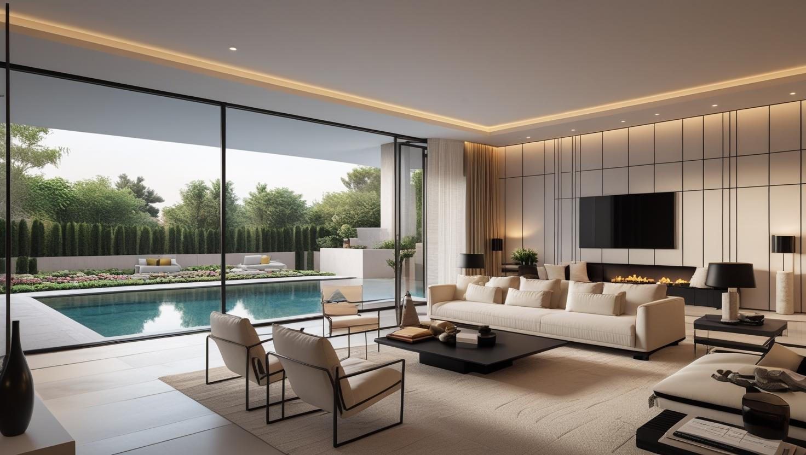
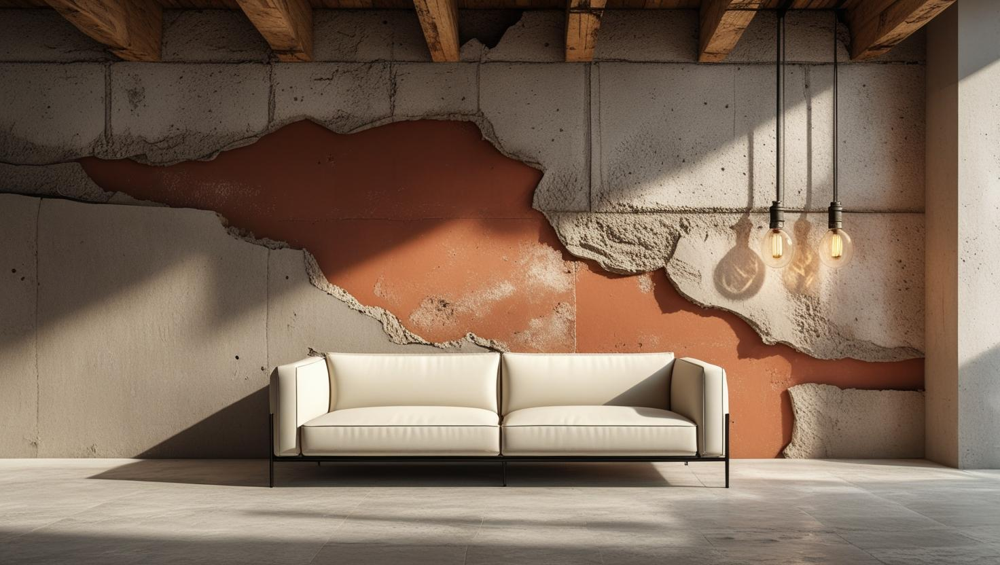

Kemerburgaz'ın Doğa ile Bütünleşen Boya Ustası
Kemerburgaz ve Göktürk'te villa, site içi konut ve modern yaşam alanları için peyzaja uyumlu, estetik ve kaliteli boya çözümleri sunuyoruz.
Kemerburgaz'da Boya Badana: Orman Çevresi Villa ve Site Konutları
Kemerburgaz boyacı talebi Eyüpsultan'a bağlı bu semtin orman çevresi ve site ağırlıklı yapısından geliyor. Villa ve müstakil ev stoğunun yanında planlı konut siteleri bulunuyor.
Ormanlık dokuya yakınlık, havadaki nem oranını yükseltiyor. Gölge alan ve kuzeye bakan cephelerde bu, yüzeyde küf ve yeşillenme eğilimi olarak görülebiliyor; bu cephelerde temizlik ve doğru astar boya seçiminden daha belirleyici oluyor.
Villa ve müstakil evlerde iş çoğu zaman dış cephe, bahçe duvarı ve ahşap doğramayı da kapsıyor. Kemerburgaz boya ustası keşfinde kapsamı bir bütün olarak değerlendiriyoruz.
Kemerburgaz & Göktürk Boya Hizmetlerimiz

Villa & Modern Konut Boyama
Doğal ışığı en iyi şekilde yansıtan, ferah ve modern yaşam alanları yaratıyoruz.
- Geniş ve yüksek tavan uzmanlığı
- Doğal ve minimalist renk paleti
- Şömine çevresi ve özel niş uygulamaları
- Temiz, kokusuz ve hızlı uygulama

Dış Cephe & Ahşap Boyama
Villanızın dış cephesini ve ahşap kısımlarını bölgenin iklim şartlarına karşı koruma altına alıyoruz.
- Nem ve UV korumalı dış cephe boyaları
- Ahşap ve kompozit yüzey koruma
- Peyzajla uyumlu renk seçenekleri
- Su itici ve uzun ömürlü çözümler

Country & Dekoratif Boya
Mekanınıza sıcaklık ve karakter katan, doğadan ilham alan modern dekoratif boya uygulamaları.
- Doğal dokulu sıva ve efektler
- Country ve İskandinav tarzı uygulamalar
- Tuğla ve taş görünümlü duvarlar
- İç mimariyle uyumlu tasarımlar
Neden Kemerburgaz'da İstanbul Boyacılık?
Kemerburgaz & Göktürk Uzmanlığı
Bölgenin mimarisine, sitelerin çalışma düzenine ve beklentilerine hakimiz
Titiz & Disiplinli İşçilik
Planlanan sürede, çevreyi ve peyzajı koruyarak temiz bir iş teslim ederiz
Premium Malzeme Kalitesi
Villanızın değerini koruyan, en iyi ve en sağlıklı boya markalarıyla çalışırız
Güvenilir & Referanslı Ekip
Mahremiyetinize önem veren, sigortalı ve profesyonel ustalardan oluşuruz
Doğaya ve Çevreye Saygı
Çalışmalarımızda çevreye duyarlı, düşük VOC'li malzemeler tercih ederiz
Memnuniyet odaklı çalışma
Villa işlerinde iç ve dış yüzeyleri teslimden önce sizinle birlikte gözden geçiriyoruz
Kemerburgaz Boyacı Ustası: Doğayla Bütünleşen Sanat ve Zanaatkarlık
İstanbul'un karmaşasından uzakta, doğayla iç içe bir yaşam sunan Kemerburgaz ve Göktürk'te, evlerin sadece birer yapı değil, aynı zamanda bir yaşam tarzının yansıması olduğunun bilincindeyiz. Biz, İstanbul Boyacılık olarak, bu özel bölgenin mimari estetiğine ve doğal dokusuna saygı duyan bir hizmet anlayışı sunuyoruz. Kemerburgaz boyacı ustası arayışınızda, modern villanızın minimalist çizgilerinden, country tarzı evinizin sıcak ahşap dokularına kadar her detayı anlayan ve bu vizyonu hayata geçiren profesyonel bir partner arıyorsanız, doğru yerdesiniz.
Kemerburgaz, Göktürk ve Kuzey Ormanları Çevresindeki Semtler
Kemerburgaz boyacı ustası olarak Kemerburgaz, Göktürk ve kuzey ormanları çevresindeki semtlerde hizmet veriyoruz:
Hizmet Verdiğimiz Yakın Bölgeler
- Kemerburgaz
- Göktürk
- Zekeriyaköy
- Uskumruköy
- Bahçeköy
- Maslak (Villalar)
- Mithatpaşa
- Alibeyköy (Yeşilpınar)
- Ayazağa
- Ormanada
- Sarıyer Köyleri
- Eyüpsultan (Kırsal)
Faydalı Bağlantılar
Kemerburgaz bölgesinde premium iç cephe veya dekoratif boya planlıyorsanız fiyat, metrekare hesabı ve marka seçimi rehberlerini birlikte incelemek daha sağlıklı karar verir.
Villa teklifi bölüm bölüm hazırlanıyor. Kemerburgaz'daki villa ve müstakil ev işlerinde tek bir metrekare rakamı yanıltıcı olacağı için bu sayfada fiyat yazmıyoruz. İç cephe ve dış cephe alanlarını keşifte ayrı ölçüyor, ahşap yüzeylerin bakım ihtiyacını da ayrıca değerlendiriyoruz. Teklif bölümlere ayrıldığı için hava koşuluna bağlı dış cephe işini uygun mevsime, iç cepheyi ise size uyan bir tarihe planlayabilirsiniz.
Kemerburgaz'da kapsamı büyüten kalemler dış cephenin devreye girmesi, gölge ve nem alan cephelerde çıkan temizlik ile hazırlık işi, geniş yüzeyler ve site çalışma kuralları.
Site içindeki bir dairenin bütçesini önceden tahmin etmek isterseniz 2026 ev boyama fiyatları yazısındaki daire tipine göre aralıklar başlangıç noktası olabilir. Göktürk ve Kemerburgaz dışında hizmet verdiğimiz bütün semtler İstanbul boyacı hizmet bölgeleri sayfasında listeleniyor.
Sıkça Sorulan Sorular
Villa, bahçe duvarı ve orman nemi: Kemerburgaz ve Göktürk için sık sorulanlar
Kemerburgaz villalarında iç cephede renklerin doğayla uyumuna, geniş yüzeylere ve ahşap aksama özellikle dikkat ediyoruz. Renk paletini pencereden görünen orman manzarasını, bahçedeki peyzajı ve mevsimle değişen ışığı hesaba katarak birlikte seçiyoruz. Yüksek tavanlar, şömine çevresi ve nişler ayrı özen istiyor; ahşap tavan ve lambiriler de duvardan farklı bir bakım gerektiriyor. Site içindeki villalarda çalışmayı yönetim kurallarına göre planlıyoruz.
Kemerburgaz'daki villalarda tek bir metrekare fiyatı yanlış fikir vereceği için teklifi bölüm bölüm hazırlıyoruz. Keşifte iç ve dış cephe alanlarını ayrı ölçüyor, ahşap yüzeylerin yoğunluğunu ve bakım ihtiyacını ayrıca değerlendiriyoruz. Dış cephenin işe girmesi, gölge ve nem alan cephelerdeki temizlik, geniş yüzeyler ve site kuralları kapsamı büyütüyor. Bölümlere ayrılan teklif sayesinde dış cepheyi uygun mevsime, iç cepheyi size uyan bir tarihe planlayabilirsiniz.
Şömine çevresi, giriş holü ya da merdiven duvarı gibi odak noktası olan yüzeyler bu tür dokular için uygun alanlar. Şömine yakınındaki dokulu yüzey zamanla is ve toz tutabileceği için üzerine koruyucu bir son kat uygulanması temizliği kolaylaştırır. Country tarzı için sıcak toprak tonlarında tuğla dokusu, İskandinav tarzı için açık gri ya da kırık beyaz taş dokusu daha uyumlu durur.
Evet, özellikle iç mekanlarda düşük VOC (Uçucu Organik Bileşik) içeren, kokusuz, antialerjik ve çevre dostu sertifikalı premium boya markalarını ve serilerini sunuyoruz.
Ormana bakan cephede yeşillenme kalıcı olarak önlenebilir mi?
Tamamen önlemek gerçekçi değil; gölge ve nem alan cephelerde biyolojik yüzey oluşumu tekrar edebiliyor. Uygun temizlik, doğru astar ve dış cepheye uygun sistem bunu geciktiriyor. Bu cephelerin bakım aralığı güneş gören cephelerden kısa oluyor.
Bahçe duvarı için farklı boya mı gerekiyor?
Gerekiyor. Bahçe duvarı doğrudan yağmur ve güneş görüyor, ayrıca zeminden nem çekebiliyor. İç cephe boyası bu koşullarda kısa sürede bozuluyor; dış mekâna uygun sistem ve doğru astar gerekiyor.
Kemerburgaz'a keşfe geliyor musunuz?
Geliyoruz. Telefonda adresi ve işin kapsamını aldıktan sonra keşif için gerçekçi bir gün söylüyoruz; mümkünse iç ve dış cepheyi tek keşifte değerlendiriyoruz.
Kemerburgaz Boyacılık Müşteri Yorumları
"Kemerburgaz'daki sitemizde bulunan villamızın komple boyası için İstanbul Boyacılık ile anlaştık. Ekibin site kurallarına uyumu, bahçemizi ve peyzajı korumadaki özenleri ve temiz işçilikleri bizi çok etkiledi. Evimiz doğayla daha da bütünleşti."
Ayşe ve Tolga Sönmez
Kemerburgaz / İstanbul
"Göktürk'teki Country tarzı kafemizin konseptini yenilemek istiyorduk. Ahşap yüzeylere ve iç mekan duvarlarına uyguladıkları doğal dokulu boyalarla tam hayalimizdeki sıcak atmosferi yarattılar. Profesyonel ve sanatsal bir dokunuş."
Burak Koçhan
Göktürk / İstanbul
"Yeni yaptırdığımız modern villamızın minimalist tarzına uygun pürüzsüz yüzeyler ve net renk geçişleri gerekiyordu. İstanbul Boyacılık, beklentilerimizin üzerinde bir titizlikle çalışarak, beton ve ahşabın uyumunu mükemmel bir şekilde sergiledi."
Mimar Elif Günay
Kemerburgaz / İstanbul
İletişim
İşletme merkezi: Orta, Demirkapı Cd. No:1, 34030 Bayrampaşa/İstanbul
İşletme merkezini Google Haritalar’da görüntüleyin
İletişim Bilgileri
Telefon: 0507 832 29 12
E-posta: boyaustamistanbul@gmail.com
10+ Uzman Ustamızla Kemerburgaz ve tüm İstanbul'a hizmet veriyoruz
Çalışma Saatleri: 7/24 (Pzt-Paz 00:00-23:59)